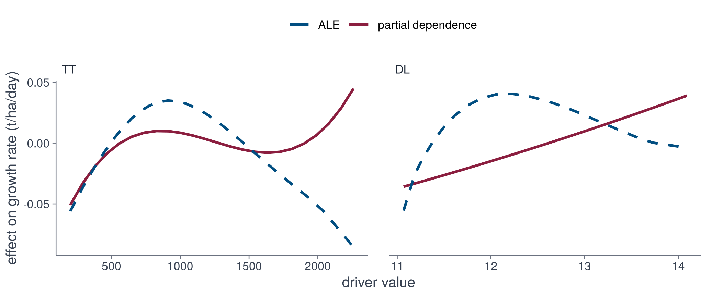

fit_genotype <- function(g) {
d <- make_design(Theta, tr, g)
fit_stlsq(d$X, d$dy)
}
coefs <- sapply(tr$genotypes, fit_genotype) # (1 + terms) x genotype
round(coefs[, "g114"], 4)6 · Interpretation
source("R/pipeline.R")import matplotlib.pyplot as plt
import numpy as np
import pandas as pd
from dgxe import *
wx = pd.read_csv("data/narrabri_weather.csv")
traj = pd.read_csv("data/narrabri_biomass.csv.gz")
drv = make_drivers(wx)
Theta = make_library(drv)
tr = make_trajectories(traj, drv)Fitted equations
For interpretation, the sparse model (STLSQ) of every genotype is fitted to all seasons. The coefficients of the median genotype (g114) are
def fit_genotype(g):
d = make_design(Theta, tr, g)
return fit_stlsq(d.X, d.dy)
coefs = pd.DataFrame({g: fit_genotype(g) for g in tr.genotypes},
index=["1"] + Theta.terms) # (1 + terms) x genotype
print(coefs["g114"].round(4)) 1 TT TT^2 TT^3 DL DL^2 DL^3 RAW RAW^2 RAW^3
0.1605 -0.0320 -0.0304 0.0113 0.0070 -0.0628 0.0249 0.0204 -0.0144 -0.0033
RAD RAD^2 RAD^3
0.0074 0.0000 0.0000 Terms with a coefficient of zero were removed. Individual coefficients of a polynomial are difficult to interpret, so the equation is examined through the growth rate it implies.
Growth rate over the season
Predicted growth rate of genotype g114 for the drivers of each season (grey) and of three selected seasons.
nd <- dim(Theta)[2]
rate_y <- function(y) cbind(1, Theta[y, , ]) %*% coefs[, "g114"]
d <- data.frame(das = rep(1:nd + tr$das0 - 1, length(tr$years)),
year = rep(tr$years, each = nd),
rate = unlist(lapply(seq_along(tr$years), rate_y)))
d <- d[d$das <= tr$das0 + max(tr$nend) - 1, ]
shown <- d[d$year %in% c(1984, 1998, 2008), ]
ggplot(d, aes(das, rate, group = year)) +
geom_line(colour = "#D1D5DB", linewidth = 0.3) +
geom_line(data = shown, aes(colour = factor(year)), linewidth = 0.8) +
scale_colour_dgxe("blue", "cyan", "burgundy") +
labs(x = "days after sowing", y = "growth rate (t/ha/day)") +
theme_dgxe() +
legend_top()b = coefs["g114"].to_numpy()
rate = b[0] + Theta.array @ b[1:] # season x day
rate = rate[:, :tr.nend.max()]
das = np.arange(rate.shape[1]) + tr.das0
fig, ax = plt.subplots(figsize=(7, 2.8))
ax.plot(das, rate.T, color=GREY, lw=0.3)
for year, colour in zip([1984, 1998, 2008], [BLUE, CYAN, BURGUNDY]):
ax.plot(das, rate[list(tr.years).index(year)], color=colour, lw=1.2,
label=year)
ax.legend(frameon=False)
ax.set_xlabel("days after sowing")
ax.set_ylabel("growth rate (t/ha/day)")
fig.tight_layout()
For this additive library the rate is a sum of one function per driver, so its contributions can be separated. For season 1998:
contribution <- function(driver) {
terms <- grep(paste0("^", driver), dimnames(Theta)[[3]])
Theta[match(1998, tr$years), , terms] %*% coefs[1 + terms, "g114"]
}
parts <- sapply(drv$drivers, contribution)
d <- data.frame(das = rep(1:nd + tr$das0 - 1, 5),
part = factor(rep(c(drv$drivers, "total"), each = nd),
c(drv$drivers, "total")),
value = c(parts, coefs[1, "g114"] + rowSums(parts)))
d <- d[d$das <= tr$das0 + tr$nend["g114", match(1998, tr$years)], ]
ggplot(d, aes(das, value, colour = part, linewidth = part)) +
geom_hline(yintercept = 0, colour = "#9CA3AF", linewidth = 0.3) +
geom_line() +
scale_colour_manual(values = unname(dgxe[c("blue", "cyan", "burgundy",
"green", "ink")])) +
scale_linewidth_manual(values = c(0.6, 0.6, 0.6, 0.6, 1.1)) +
labs(x = "days after sowing", y = "contribution to growth rate (t/ha/day)") +
theme_dgxe() +
legend_top()s = list(tr.years).index(1998)
n = tr.nend[np.searchsorted(tr.genotypes, "g114"), s] + 1
parts = {}
for name in drv.drivers:
cols = [i for i, t in enumerate(Theta.terms) if t.startswith(name)]
parts[name] = Theta.array[s, :n][:, cols] @ b[1 + np.array(cols)]
parts["total"] = b[0] + sum(parts.values())
das = np.arange(n) + tr.das0
fig, ax = plt.subplots(figsize=(7, 2.8))
ax.axhline(0, color="#9CA3AF", lw=0.5)
for (name, y), colour in zip(parts.items(),
[BLUE, CYAN, BURGUNDY, "#469C2A", "#1F2937"]):
ax.plot(das, y, color=colour, lw=2 if name == "total" else 1, label=name)
ax.legend(frameon=False, ncol=5)
ax.set_xlabel("days after sowing")
ax.set_ylabel("contribution to growth rate (t/ha/day)")
fig.tight_layout()
The growth rate (total) is the sum of the four contributions and the constant term (not shown).
Effect of a single driver
The effect of one driver cannot be read by varying it alone while the others are held fixed, since the drivers are correlated in real weather:
Z <- as.data.frame(observed_points(drv, tr)) # standardised drivers
round(cor(Z), 2)Z = observed_points(drv, tr) # standardised drivers
print(Z.corr().round(2)) TT DL RAW RAD
TT 1.00 0.97 -0.65 0.72
DL 0.97 1.00 -0.67 0.74
RAW -0.65 -0.67 1.00 -0.58
RAD 0.72 0.74 -0.58 1.00Accumulated local effects (ALE) vary the driver only within narrow intervals around values that occur, using the observed values of the other drivers, and accumulate the resulting changes in the growth rate. The iml package computes them for any model that provides a prediction function; here the model is the growth rate of a genotype.
predictor <- function(coef, pairs = FALSE) {
rate <- function(model, newdata) {
L <- library_matrix(as.matrix(newdata), pairs = pairs)
as.vector(cbind(1, L) %*% model)
}
Predictor$new(coef, data = Z, predict.function = rate)
}
natural <- function(z, j) z * drv$scale[j] + drv$center[j] # original units
ale_genotype <- function(g, j) {
effect <- FeatureEffect$new(predictor(coefs[, g]), drv$drivers[j],
method = "ale", grid.size = 24)$results
data.frame(genotype = g, driver = factor(drv$drivers[j], drv$drivers),
x = natural(effect[[drv$drivers[j]]], j), effect = effect$.value)
}
cells <- expand.grid(g = tr$genotypes, j = seq_along(drv$drivers),
stringsAsFactors = FALSE)
curves <- cached("ale_genotypes.rds", do.call(rbind, Map(ale_genotype, cells$g, cells$j)))import logging
from PyALE import ale
logging.getLogger().setLevel(logging.WARNING)
def natural(z, j): # original units
return z * drv.scale[j] + drv.center[j]
def ale_genotype(g, j):
rate = GrowthRate(coefs[g].to_numpy())
effect = ale(Z, rate, [drv.drivers[j]], grid_size=24,
include_CI=False, plot=False)
return pd.DataFrame({"genotype": g, "driver": drv.drivers[j],
"x": natural(effect.index.to_numpy(), j),
"effect": effect["eff"].to_numpy()})
curves = pd.concat(ale_genotype(g, j)
for g in tr.genotypes for j in range(4))The ALE curve of each driver for every genotype (grey), and for the genotypes with the lowest, median and highest final biomass:
three <- spread_genotypes(tr)
observed <- do.call(rbind, lapply(seq_along(drv$drivers), function(j) {
data.frame(driver = factor(drv$drivers[j], drv$drivers), x = natural(Z[, j], j))
}))
ggplot(curves, aes(x, effect, group = genotype)) +
geom_hline(yintercept = 0, colour = "#9CA3AF", linewidth = 0.3) +
geom_line(colour = "#D1D5DB", linewidth = 0.25) +
geom_line(data = curves[curves$genotype %in% three, ],
aes(colour = genotype), linewidth = 0.8) +
geom_rug(data = observed, aes(x = x), inherit.aes = FALSE, sides = "b",
alpha = 0.03) +
facet_wrap(~driver, scales = "free_x") +
scale_colour_dgxe("burgundy", "cyan", "blue") +
labs(x = "TT (°C d) · DL (h) · RAW (0 to 1) · RAD (MJ/m²/day)",
y = "effect on growth rate (t/ha/day)") +
theme_dgxe() +
legend_top()three = spread_genotypes(tr)
fig, axes = plt.subplots(2, 2, figsize=(8, 5))
for j, (ax, name) in enumerate(zip(axes.flat, drv.drivers)):
sub = curves[curves["driver"] == name]
for g, c in sub.groupby("genotype"):
ax.plot(c["x"], c["effect"], color=GREY, lw=0.25)
for g, colour in zip(three, [BURGUNDY, CYAN, BLUE]):
c = sub[sub["genotype"] == g]
ax.plot(c["x"], c["effect"], color=colour, lw=1.2, label=g)
ax.plot(natural(Z[name], j), np.full(len(Z), ax.get_ylim()[0]), "|",
color="k", alpha=0.03)
ax.axhline(0, color="#9CA3AF", lw=0.5)
ax.set_title(name, loc="left")
axes[0, 0].legend(frameon=False)
fig.supylabel("effect on growth rate (t/ha/day)")
fig.tight_layout()
The rug marks show where data exist. Thermal time is accumulated from sowing, so its curve describes the dependence of growth on the stage of the season, not a response to temperature. Thermal time and day length are correlated at 0.97 and are best read together.
Interactions and partial dependence
The 12-term library is additive in the drivers: the effect of one driver does not depend on the others, and ALE and partial dependence coincide. With products of drivers (36 terms, backward elimination to 20 terms) they differ. For g114, partial dependence averages the growth rate over all observed days while one driver is set to each value in turn.
Theta2 <- make_library(drv, pairs = TRUE)
d2 <- make_design(Theta2, tr, "g114")
pred2 <- predictor(fit_subset(d2$X, d2$dy, k = 20, method = "backward"), TRUE)
effects <- function(j) {
feature <- drv$drivers[j]
ale <- FeatureEffect$new(pred2, feature, "ale", grid.size = 24)$results
pdp <- FeatureEffect$new(pred2, feature, "pdp", grid.size = 24)$results
pdp$x <- natural(pdp[[feature]], j)
pdp$driver <- factor(feature, drv$drivers)
pdp$.value <- pdp$.value - mean(pdp$.value)
ale$x <- natural(ale[[feature]], j)
ale$driver <- pdp$driver[1]
pdp[[feature]] <- NULL
ale[[feature]] <- NULL
list(pdp = pdp, ale = ale)
}
parts <- lapply(1:2, effects)Theta2 = make_library(drv, pairs=True)
d2 = make_design(Theta2, tr, "g114")
rate2 = GrowthRate(fit_subset(d2.X, d2.dy, k=20, method="backward"), pairs=True)
def effects(feature):
j = drv.drivers.index(feature)
a = ale(Z, rate2, [feature], grid_size=24, include_CI=False, plot=False)
grid = np.linspace(Z[feature].min(), Z[feature].max(), 24)
pdp = np.array([rate2.predict(Z.assign(**{feature: v})).mean()
for v in grid])
return (natural(grid, j), pdp - pdp.mean(),
natural(a.index.to_numpy(), j), a["eff"].to_numpy())bind <- function(name) do.call(rbind, lapply(parts, `[[`, name))
pdp <- bind("pdp"); ale <- bind("ale")
ggplot(pdp, aes(x, .value)) +
geom_line(aes(colour = "partial dependence"), linewidth = 0.9) +
geom_line(data = ale, aes(y = .value, colour = "ALE"), linewidth = 0.9,
linetype = 2) +
facet_wrap(~driver, scales = "free_x") +
scale_colour_dgxe("blue", "burgundy") +
labs(x = "driver value", y = "effect on growth rate (t/ha/day)") +
theme_dgxe() +
legend_top()fig, axes = plt.subplots(1, 2, figsize=(8, 3))
for ax, feature in zip(axes, ["TT", "DL"]):
x, pdp, xa, a = effects(feature)
ax.plot(x, pdp, color=BURGUNDY, lw=1.5, label="partial dependence")
ax.plot(xa, a, "--", color=BLUE, lw=1.5, label="ALE")
ax.set_title(feature, loc="left")
axes[0].legend(frameon=False)
fig.supxlabel("driver value")
fig.supylabel("effect on growth rate (t/ha/day)")
fig.tight_layout()
The two curves differ because of the interactions. Partial dependence also evaluates the model at combinations of drivers that do not occur in the data, for example a short day late in a season with high thermal time, whereas ALE does not.